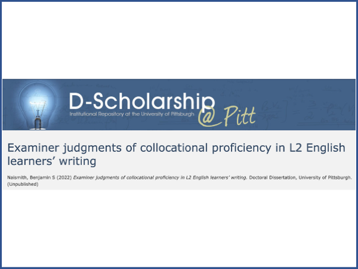

Ben Naismith
English Language Teaching and Assessment
PhD, MSc, MA Applied Linguistics
Profile
I am an experienced professional in the fields of Applied Linguistics and English Language Teaching, and I have been fortunate to work with amazing people in a variety of roles and contexts around the world. Currently, I am part of the Duolingo English Test research team which is committed to advancing the field of high stakes testing through research and development. My research interests include second language acquisition (especially lexis), language assessment, TESOL, and corpus linguistics.
Curriculum Vitae
Click here to download the PDF or contact me for industry-specific resumes.
Past projects
For assessment-related projects completed at Duolingo, please visit the Duolingo English Test Test Research web page. The following are two past major academic projects completed at the University of Pittsburgh. Click the images or links for more information about the projects.
\

PhD Dissertation on examiner judgements of collocational proficiency,
Website, dataset, and journal article introducing PELIC, a learner corpus.
About Me
Originally from Canada, I have spent most of my adult life living and teaching in other countries including the UK, Thailand, Costa Rica, the UAE, and now the USA. Outside of school and work, I can almost always be found spending time with my small family – my wife, daughter, and our dogs – as we explore the world together.
Updates (2023)